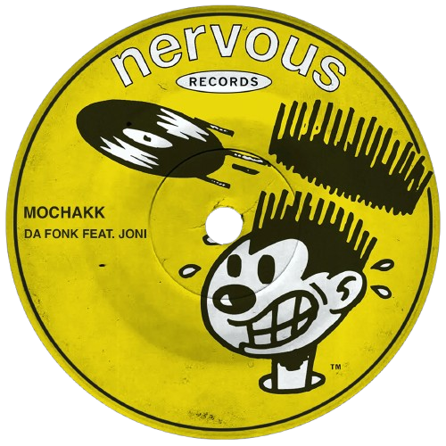

MOCK MUSIC
Mochakk*
Rising from Brazil’s vibrant scene of exceptional musical talent, Mochakk, also known as Pedro Maia, has quickly established himself as a standout figure in the world of electronic music.

Rising from Brazil’s vibrant scene of exceptional musical talent, Mochakk, also known as Pedro Maia, has quickly established himself as a standout figure in the world of electronic music.